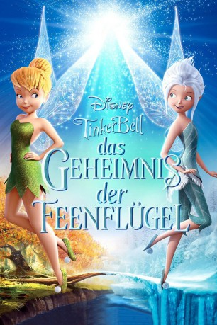

#965 TinkerBell 4 - Das Geheimnis der Feenflügel
Alternativ: Secret of the Wings
 
 IMDB-Wertung: 7.2 / 10
IMDB-Wertung: 7.2 / 10  Metascore: 0
Metascore: 0 
Der Winterwald ist für Tinkerbell und die andere Feen der warmen Jahreszeiten ein mysteriöser und verbotener Ort. Von der Schönheit der kalten Jahreszeit angezogen, schleicht sich die neugierige Tink dennoch in die Winterwelt und etwas Außergewöhnliches passiert: Ihre Feenflügel beginnen zu glitzern. Angetan mit einem warmen Mantel macht sie sich auf die Suche nach dem Geheimnis der Feenflügel und erlebt ihr größtes Abenteuer als ihr Tal in Gefahr gerät und der Feenstaubbaum durch das ewige Eis der Winterwelt bedroht wird.
Jahr: 2012
Dauer: 75 Minuten
FSK: 0
Land: USA Studio: Walt Disney Studios Motion PicturesTonspuren: DD5.1 - ,
Untertitel:
Auflösung: 1080p (1920x1080) Größe: 4474 MB
Genre: Animation/Trick, Familie, Fantasy
Regisseur: Roberts Gannaway, Peggy Holmes
Drehbuch: Roberts Gannaway, Peggy Holmes, Ryan Rowe, Tom Rogers
Soundtrack: Joel McNeely
Darsteller:
Datei: X:\Kinder Disney HD\Tinkerbell\TinkerBell 4 - Das Geheimnis der Feenflügel (2012, FSKo.Al., 1920x1080).mkv seit 29.04.2015
Festplatte: Kinder-Filme+Trick
 Es gibt insgesamt 11 Filme in der Gruppe 'Kinder Disney HD\Tinkerbell'
Es gibt insgesamt 11 Filme in der Gruppe 'Kinder Disney HD\Tinkerbell'